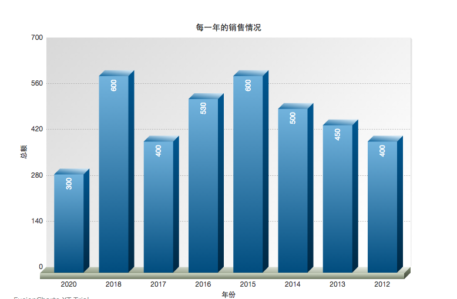

基于 Leap Motion 的数据可视化互动工具
三维柱状图
这个图形的作用...
2D/3D条形柱状图
立体效果更符合视觉习惯.
多维2D/3D 条形柱状图
利于比较多维数据.

折线图
适合那些趋势比单个数据点更重要的场合.

饼图
反映某个部分占整体的比重
散点图
适用于三维数据集，但其中只有两维需要比较
Leap Motion
设计交互式的多媒体自助服务终端，或者将它和你的键盘、鼠标结合使用
数据可视化
数据可视化主要是借助于图形化手段，清晰有效地传达与沟通信息
使用说明
本文档主要介绍交互手势和数据源的结构.
- 1.了解每一个图形的数据结构
- 2.选择最合适的图形展现数据
- 3.为自己的图形设置样式
- 4.扩展该工具
- 5.了解手势的原理
- 6. 能正确操作图形
- 7.自定义设计手势
- Leap Motion是面向PC以及Mac的体感控制器制造公司Leap于2013年2月27日发布的体感控制器
- 2014年8月30日正式登陆中国，中文名为“厉动”
- Leap Motion 控制器不会替代您的键盘、鼠标、手写笔或触控板，相反，它与它们协同工作。
- 当Leap Motion软件运行时只需将它插入您的 Mac 或 PC 中，一切即准备就绪。 只需挥动一只手指即可浏览网页、阅读文章、翻看照片，还有播放音乐。 即使不使用任何画笔或笔刷，用您的指尖即可以绘画，涂鸦和设计。
- Leap Motion 控制器以超过每秒 200 帧的速度追踪您的手部移动，这就是屏幕上的动作与您的每次移动完美同步的原因。
数据可视化主要旨在借助于图形化手段，清晰有效地传达与沟通信息。但是， 这并不就意味着，数据可视化就一定因为要实现其功能用途而令人感到枯燥乏味， 或者是为了看上去绚丽多彩而显得极端复杂。为了有效地传达思想概念，美学形式 与功能需要齐头并进，通过直观地传达关键的方面与特征，从而实现对于相当稀疏而 又复杂的数据集的深入洞察。然而，设计人员往往并不能很好地把握设计与功能之间的 平衡，从而创造出华而不实的数据可视化形式，无法达到其主要目的，也就是传达与沟通 信息。 数据可视化与信息图形、信息可视化、科学可视化以及统计图形密切相关。当 前，在研究、教学和开发领域，数据可视化乃是一个极为活跃而又关键的方面。“数据可视 化”这条术语实现了成熟的科学可视化领域与较年轻的信息可视化领域的统一。
连接数据库实时展现数据的变化.
点击此处实时观测数据情况 
leap Motion的主要原理是使用红外LED+灰阶camera的方式才采集数据，并生成3D数据。 这样的技术并不算新鲜，但Leap的优势是在软件方面，当然由于使用了红外LED+灰阶camera，成本也会更便宜一些。由于只处理手部的3D，不像现在Kinect需要生成全身skeleton, 复杂的depth信息，Leap的运行效率自然也会高很多，对处理图形的DSP要求也不会特别高。 Kinect的技术是用激光+camera的方式实现3D建模。其实两者的实现的总的方式是差不多的，无非是技术使用以及算法上面的区别。如果Leap的技术做远距离的，性能就不会有现在的那么好了。
Leap Motion除了开发桌面应用程序外，现阶段也加入了虚拟现实的研究，并且取得了不晓得成就，在未来我相信leap motion 会越来越流行起来的。

{{todo.user}}待办事项 {{incompleteCount()}}
| 待办事项 | 完成 |
|---|---|
| {{item.action}} |